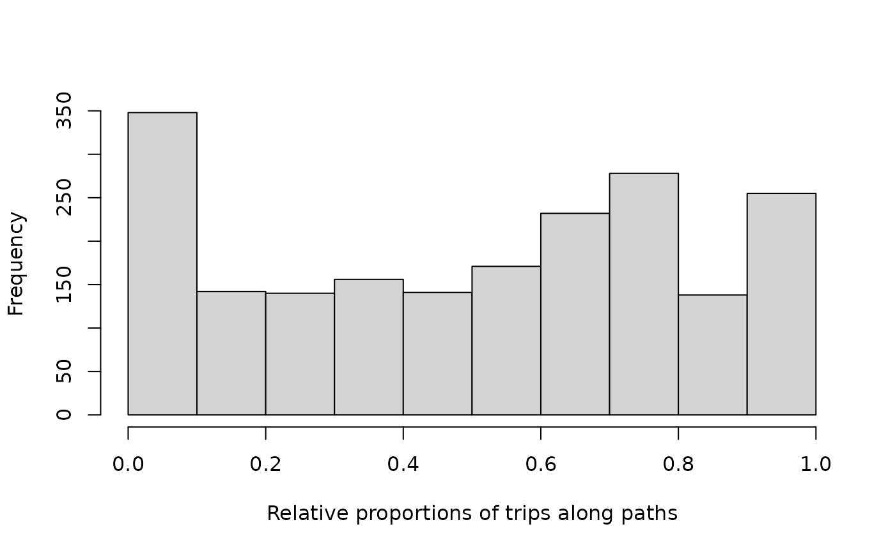
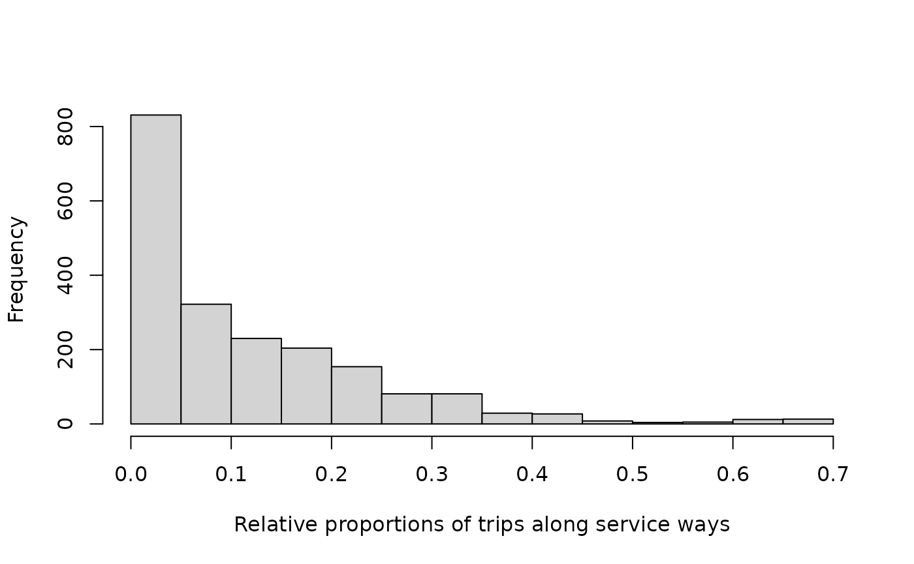

Aggregating distances along categories of edges
Mark Padgham
2023-09-23
Source:vignettes/dists-categorical.Rmd
dists-categorical.RmdThe dodgr_dists_categorical
function enables multiple distances to be aggregated along distinct
categories of edges with a single query. This is particularly useful to
examine information on proportions of total distances routed along
different edge categories. The following three sub-sections describe the
three main uses and interfaces of the dodgr_dists_categorical
function. Each of these requires an input graph to have
an additional column named "edge_type", which labels
discrete categories of edges. These can be any kind of discrete labels
at all, from integer values to character labels or factors. The labels
are retained in the result, as demonstrated below.
1 Full Distance Information for Edge Categories
The “default” interface of the dodgr_dists_categorical
function requires the same three mandatory parameters as dodgr_distances,
of
- A weighted
graphon which the distances are to be calculated; - A vector of
frompoints from which distances are to be calculated; and - A corresponding vector of
topoints.
As for dodgr_distances,
the from and to arguments can be either vertex
identifiers (generally as from_id and to_id
columns of the input graph), or two-column coordinates for
spatial graphs. The following code illustrates the procedure, using the
internal data set, hampi,
from the settlement of Hampi in the middle of a national park in the
Deccan Plains of India. The following code also reduces the network to
the largest connected component only, to ensure all points are mutually
reachable.
graph <- weight_streetnet (hampi, wt_profile = "foot")
graph <- graph [graph$component == 1, ]
graph$edge_type <- graph$highway
table (graph$edge_type)##
## path primary residential secondary service steps
## 2767 106 32 560 184 28
## track unclassified
## 518 454That network then has 8 distinct edge types. Submitting this graph to the function, and calculating pairwise distances between all points, then gives the following result:
v <- dodgr_vertices (graph)
from <- to <- v$id
d <- dodgr_dists_categorical (graph, from, to)
class (d)## [1] "list" "dodgr_dists_categorical"
length (d)## [1] 9
sapply (d, dim)## distances path primary residential secondary service steps track
## [1,] 2270 2270 2270 2270 2270 2270 2270 2270
## [2,] 2270 2270 2270 2270 2270 2270 2270 2270
## unclassified
## [1,] 2270
## [2,] 2270The result has the dedicated class,
dodgr_dists_categorical, which it itself a list of
matrices, one for each distinct edge type. This class enables a
convenient summary method which converts data on aggregate
distances along each category of edges into overall proportions:
summary (d)## Proportional distances along each kind of edge:
## path: 0.5133
## primary: 0.016
## residential: 4e-04
## secondary: 0.1559
## service: 0.0607
## steps: 0.0018
## track: 0.1018
## unclassified: 0.15Those statistics clearly highlight the fact that Hampi is a pedestrian town - most ways are either paths or tracks, with a new “secondary” ways for access vehicles.
2. Proportional Distances along each Edge Category
If summary results like those immediately above are all
that is desired, then a proportions_only parameter can be
used in the dodgr_dists_categorical() function to directly
return those:
dodgr_dists_categorical (graph, from, to,
proportions_only = TRUE)## path primary residential secondary service steps
## 0.5133387472 0.0159931421 0.0004095266 0.1558683424 0.0607239796 0.0018185703
## track unclassified
## 0.1018482816 0.1499994102Queries with proportions_only = TRUE are constructed in
a different way in the underlying C++ code that avoids storing the full
list of matrices in memory. For most jobs, this should translate to
faster queries, as illustrated in the following benchmark:
bench::mark (full = dodgr_dists_categorical (graph, from, to),
prop_only = dodgr_dists_categorical (graph, from, to,
proportions_only = TRUE),
check = FALSE, time_unit = "s") [, 1:3]## # A tibble: 2 × 3
## expression min median
## <bch:expr> <dbl> <dbl>
## 1 full 1.01 1.01
## 2 prop_only 0.385 0.387The default value of proportions_only = FALSE should be
used only if additional information from the distance matrices
themselves is required or desired. Examples of such additional
information include parameters quantifying the distributions of the
various distance metrics, as further examined below.
3. Proportional Distances within a Threshold Distance
The third and final use of the dodgr_dists_categorical
function is through the dlimit parameter, used to
specify a distance threshold below which categorical distances are to be
aggregated. This is useful to examine relative proportions of different
edges types necessary in travelling in any and all directions away from
each point or vertex of a graph.
When a dlimit parameter is specified, the
to parameter is ignored, and distances are aggregated along
all possible routes away from each from point, out to the
specified dlimit. The value of dlimit must be
specified relative to the edge distance values contained in the input
graph. For spatial graphs obtained with dodgr_streetnet()
or dodgr_streetnet_sc(), for example, as well as the
internal hampi
data, these distances are in metres, and so dlimit must
be specified in metres.
The result is then a single matrix in which each row represents one
of the from points, and there is one column of aggregate
distances for each edge type, plus an initial column of overall
distances. The following code illustrates:
dlimit <- 2000 # in metres
d <- dodgr_dists_categorical (graph, from, dlimit = dlimit)
dim (d)## [1] 2270 9
head (d)## distance path primary residential secondary service steps
## 339318500 12081.132 9374.439 0 0 0 2621.8834 0
## 339318502 4136.047 3520.947 0 0 0 615.1004 0
## 2398958028 4153.829 3538.728 0 0 0 615.1004 0
## 1427116077 6172.783 5142.914 0 0 0 963.0322 0
## 7799710916 4191.254 3576.153 0 0 0 615.1004 0
## 339318503 6211.668 5596.568 0 0 0 615.1004 0
## track unclassified
## 339318500 0 84.80908
## 339318502 0 0.00000
## 2398958028 0 0.00000
## 1427116077 0 66.83674
## 7799710916 0 0.00000
## 339318503 0 0.00000The row names of the resultant data.frame are the vertex
identifiers specified in the from parameter. Such results
can easily be combined with spatial information on the vertices obtained
from the dodgr_vertices()
function to generate spatial maps of relative proportions around
each point in a graph or network. Summary statistics can also readily be
extracted, for example,
hist (d$path / d$distance,
xlab = "Relative proportions of trips along paths", main = "")
Trips along paths are roughly evenly distributed between 0 and 1. In contrast, proportions of trips along service ways – used to facilitate motorised vehicular access in the otherwise car-free area of Hampi, India – are distinctly different:
hist (d$service / d$distance,
xlab = "Relative proportions of trips along service ways", main = "")
These distributions provide more detailed and nuanced insights than
those provided by the overall summary functions above,
which only revealed overall respective relative proportions of 0.51 and
0.06 for paths and service ways. The results within the distance
threshold reveal that the distributional forms of proportional distances
differ as much as the aggregate values, and that both aspects of the
function provide distinct insights into proportional distances along
categories of edge types.
Finally, this use of the function also utilizes distinct difference in the underlying C++ code that are even more efficient that the previous case of proportional distances. The following code benchmarks the three modes:
bench::mark (full = dodgr_dists_categorical (graph, from, to),
prop_only = dodgr_dists_categorical (graph, from, to,
proportions_only = TRUE),
dlimit = dodgr_dists_categorical (graph, from, dlimit = 2000),
check = FALSE, time_unit = "s") [, 1:3]## # A tibble: 3 × 3
## expression min median
## <bch:expr> <dbl> <dbl>
## 1 full 0.988 0.988
## 2 prop_only 0.385 0.387
## 3 dlimit 0.0980 0.0988Finally, note that the efficiency of distance-threshold queries
scales non-linearly with increases in dlimit, with queries
quickly becoming less efficient for larger values of
dlimit.